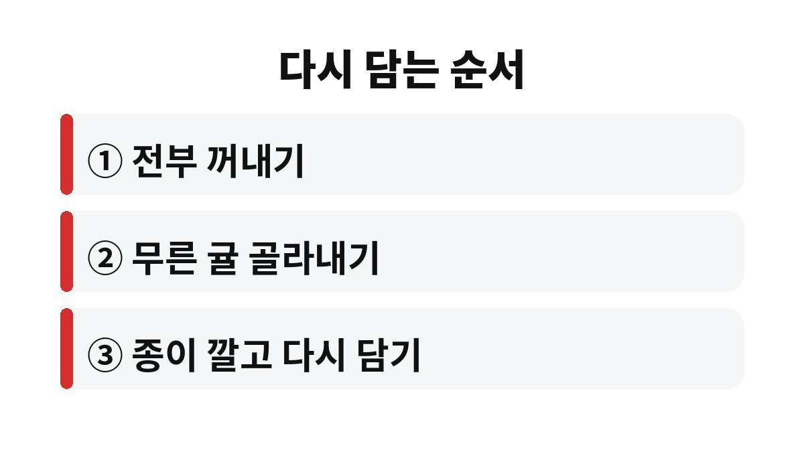

귤 보관 방법의 출발점은 냉장고가 아니라, 상자를 받은 날 전부 꺼내 무른 귤을 골라내고 꼭지가 아래로 가게 다시 담는 일이다.
한 상자를 사면 마지막 몇 개가 하얗게 곰팡이 핀 채로 나오는 일이 흔하다.
상자 바닥에 눌린 귤 하나에서 시작된 곰팡이가 맞닿은 귤로 번지기 때문이다.
택배 상자 안의 귤은 운송 중에 눌리고 부딪혀 껍질에 잘 보이지 않는 상처가 생긴 경우가 있다.
상처 난 자리로 곰팡이가 들어가고, 골판지 상자는 통풍이 잘 안 돼 안쪽에 습기가 찬다.
그래서 받은 날 한 번 다 꺼내 보는 쪽이 결국 덜 버린다.
물기가 남은 채로 담으면 곰팡이가 오히려 빨리 핀다.
귤은 먹기 직전에 씻으면 된다.
냉장 보관은 오래 두고 먹을 때 유리하지만, 비닐봉지째 묶어 넣으면 안쪽에 물방울이 맺힌다.
차가운 귤을 꺼내 실온에 오래 두었다가 다시 넣는 일을 반복하면 껍질에 이슬이 맺혀 쉽게 무른다.
며칠 안에 먹을 양은 서늘한 베란다나 현관 쪽에 두는 편이 나는 더 편했다.
귤은 따뜻하고 습한 곳에서 가장 빨리 상한다.
난방이 도는 거실 바닥, 보일러실 근처, 햇빛이 드는 창가는 피한다.
먹는 속도에 따라 장소를 나누면 된다.
| 보관 장소 | 맞는 양 | 주의할 점 |
|---|---|---|
| 서늘한 베란다·현관 | 일주일 안에 먹을 양 | 햇빛·난방기 옆을 피하고 얼지 않게 본다 |
| 냉장고 채소칸 | 오래 두고 먹을 양 | 봉지 입구를 열어 두거나 키친타월을 깐다 |
| 원래 택배 상자 | 받은 당일 정도 | 바로 꺼내 선별한 뒤 다시 담는다 |
한겨울 베란다는 밤사이 영하로 떨어지기도 한다.
얼었다 녹은 귤은 과육이 물러지고 맛이 싱거워진다.
한파 예보가 있는 날에는 바구니를 현관 안쪽으로 들여놓는다.
냉장고에 넣을 귤은 겉의 물기를 마른 행주로 한 번 닦고 넣는다.
비닐봉지를 쓴다면 입구를 묶지 않고 접어 두기만 한다.
봉지 바닥에 키친타월을 한 장 깔면 맺힌 물기를 받아 준다.
채소칸에 사과를 함께 두면 귤이 더 빨리 익어 물러질 수 있어 칸을 나눠 둔다.
먹을 만큼만 전날 밤에 꺼내 두면 차가운 맛도 덜하고 껍질에 이슬이 맺히는 일도 줄어든다.

꼭지를 아래로 두는 이유는 꼭지 쪽이 단단해서 위에 쌓인 귤의 무게를 받쳐 주기 때문이다.
둥근 아래쪽이 눌리면 그 자리부터 물러진다.
나는 이렇게 다시 담은 뒤로 상자 바닥에서 곰팡이 귤이 나오는 일이 확실히 줄었다.
다만 남은 귤이 스무 개 남짓이라면 신문지까지 깔 필요는 없다.
넓은 바구니에 한 층으로 펼쳐 두기만 해도 충분했다.
하얗거나 푸른 곰팡이가 보이면 그 귤은 버린다.
곰팡이 부분만 떼어 내고 먹는 방법은 권하지 않는다.
맞닿아 있던 귤은 마른 행주로 겉을 닦아 따로 두고 가장 먼저 먹는다.
상자 안쪽에 곰팡이 가루가 묻었다면 상자도 새것으로 바꾼다.
곰팡이는 없는데 살짝 말랑해진 귤은 상하기 직전 신호로 보고 그날 먼저 먹는다.
양이 많으면 껍질을 벗겨 알맹이만 밀폐 용기에 담아 냉동실에 넣는다.
얼린 귤은 생으로 먹을 때와 식감이 달라 셔벗처럼 먹거나 갈아서 쓰는 편이 낫다.
껍질을 깐 뒤에는 하얀 속껍질에 곰팡이 흔적이 없는지 한 번 더 본다.
귤 상자를 받은 날 10분만 들여 다시 담으면 버리는 귤이 눈에 띄게 줄어든다.
처음 한 번은 번거롭지만 두 번째 상자부터는 손에 익어서 금방 끝난다.
다음 상자를 고를 때는 우리 집이 두세 주 안에 먹을 수 있는 양인지 먼저 따져 본다.
양이 많다면 작은 상자 두 번이 큰 상자 한 번보다 나을 때가 많다.
귤이 유난히 빨리 무른다면 집 안 보관 자리의 온도부터 다시 본다.
※ 2026년 기준 공공기관 안내를 바탕으로 정리한 글이며, 집 구조와 제품에 따라 결과가 다를 수 있어 제품 설명서를 함께 확인하길 바란다.